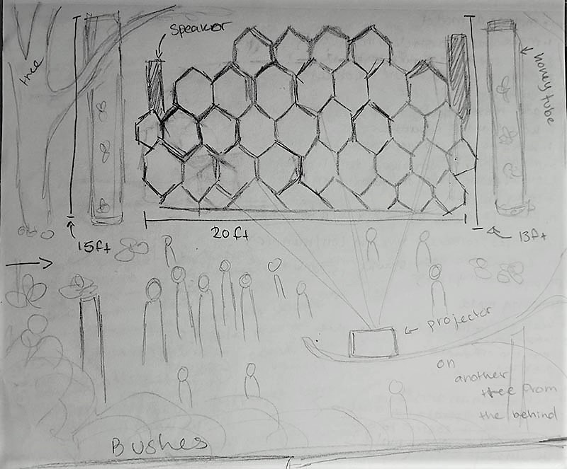

Save The Bees
Date: 2019
Mediums: HD color video, 0"4"36, and Adobe Premiere Pro
Dimension:N/A
Collaborated with Alayna Fletcher
Description: For our group project we decided to create a video about Honey Bees. Orignially we wanted to focusing on the fact that the bees are dying, how ever the idea changed into more lighthearted and simple display of the importance that honey bees have with the growth of our flowers and crops.
For our gallery installation, we are planning to have the screen and projector outside. the video is going to be projected on a screen with honeycomb shaped panels, symbolizing a bee’s nest. The screen made out of honeycomb shapes is going to be some sort of canvas-like screen material for the projection, while the borders of the honeycomb would be made out of something like cement blocks. The projector screen is meant to be standing between two trees, with fake honey bees, made out of felt, hanging from the branches of these trees and on surrounding trees within a yard radius. We were also thinking of placing large jars filled with honey and flowers submerged inside. Leading up to this scene would be a small nature path, with an apiary or two within view of the path.
If we were having our gallery installation inside, The trees on either side of the projector screen would be fake, and there would be no apiaries. There would also be a look of honey dripping off of the walls.
A rough draft of an outside installation.
